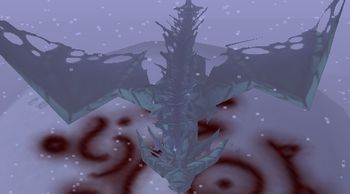

Shooter on Shadow Dragon
Put drones on two people in your team who have biggest mortality rate.
You can give your allies third drone, but only if you are sure you wont die yourself.
Make use of your great range, you should have both side islands in your range easily.
If possible, try save your W for shadow dragons Breath(-100% healing).
Each time main Dragon uses mark, try to stun him at the end of skill cast.
This way you earn important seconds for your W cooldown that you will most likely use after he cast it.
At third phase, give your orbs to melee autoattacking heros, so they can focus on autoattacking instead of dodging.